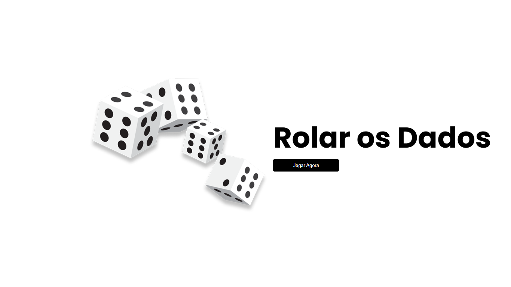
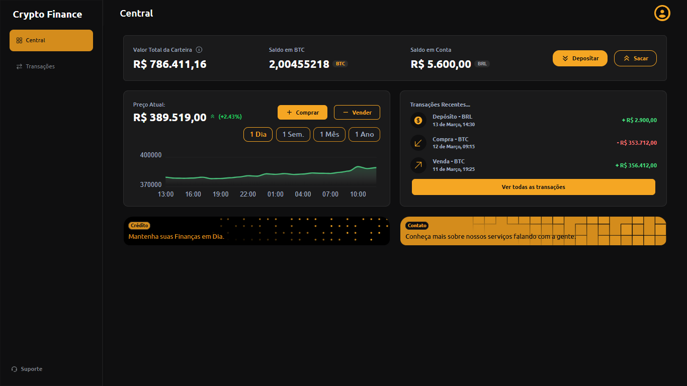
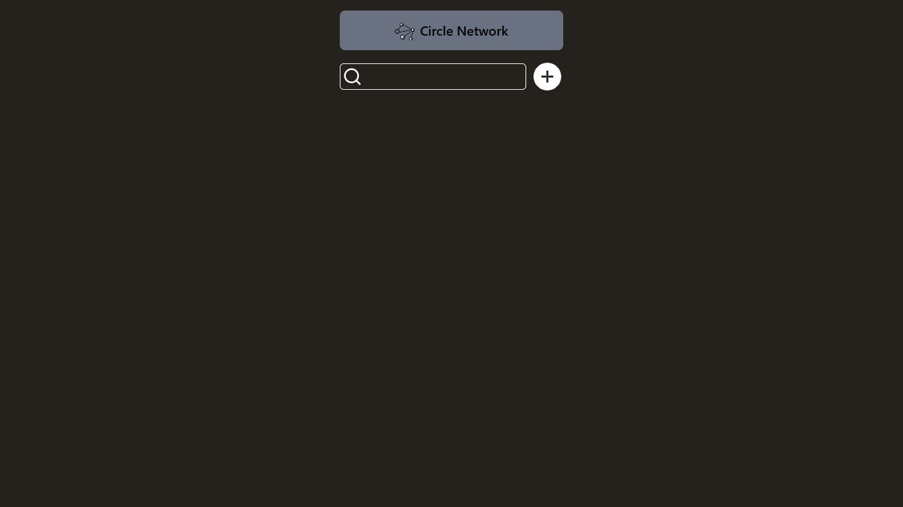
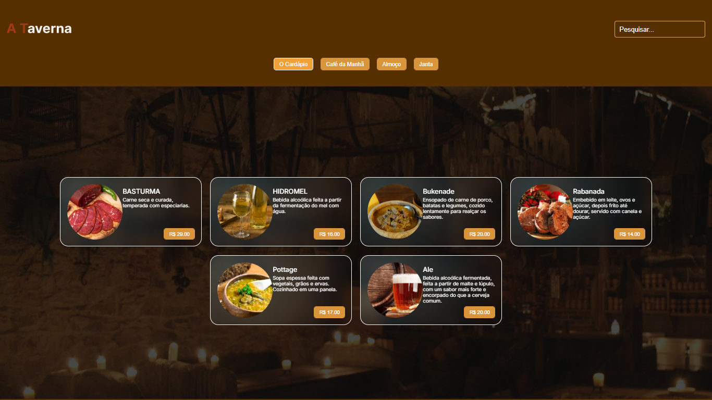

1. Por que o gato não usa um computador?
- Porque ele tem medo do mouse.

- Porque ele tem medo do mouse.
- Eles não chamam de bagunça, chamam de "teste de gravidade em ambiente de produção".
- Para poder decidir, do lado de fora, que na verdade ele queria ficar do lado de dentro.
- O "Destrucionismo Minimalista", onde menos cortinas inteiras significa mais diversão.
- "O Silêncio dos Inocentes"... principalmente quando o "inocente" é o vaso que ele acabou de derrubar.

Rolar os Dados
Um projeto que une o otimismo inabalável de um cachorro ao azar inevitável de cruzar com um gato preto.

Crypto Finance
Gráficos elegantes e dados precisos para você entrar em pânico com estilo sempre que o Bitcoin cair 1%.

Circle Network
Contatos salvos na nuvem com Firebase, porque se o seu gato derrubar café no notebook, seus amigos continuam seguros no Google.

A Taverna
Um cardápio medieval completo para você escolher o banquete que o seu gato certamente vai tentar roubar do seu prato.
Se as piadas de gato falharam e os projetos não foram suficientes para te entreter, vamos mudar de assunto. Mande uma mensagem, uma ideia ou apenas um "oi". Prometo responder mais rápido que um gato ouvindo o barulho do sachê.
Vou mostrar como uma gatice em negrito pode ter uma grande relevância usando a tag strong.
Posso mostrar um miau elegante com itálico ou colocar uma ênfase dramática de quem quer um sachê pra ontem usando em.
Alguns gatos preferem saltar para a prateleira de cima com superscript, enquanto outros ficam entocados debaixo do sofá com subscript.
Às vezes eles arranham o sofá e deixam esse traço de linha sublinhada por puro capricho.
Aí, do nada, um deles caminha pelo teclado e gera um for(let i = 0; i < Infinity; i++){ miau_querocomida() } que só um especialista entende e, para fechar, dou o pulo do gato para outro lugar.
"Os gatos não precisam de filosofia. Obedientes à própria natureza, eles ficam contentes com o que a vida lhes dá... Quando os gatos não estão caçando ou acasalando, comendo ou brincando, eles dormem. Não há angústia interior que os force a uma atividade constante."
// Pseudocódigo aprovado pelo gato
sache = 0;
while (!gato.cheio()) {
console.log("iteração " + sache);
gato.comer();
sache++;
}
console.log("levou " + sache + " iterações para alimentar o gato.");
| Raça: | Local de origem: | Aparência: |
|---|---|---|
| Siamês | Tailândia | Olhos azuis, pelagem clara com as extremidades escuras e adora interagir em projetos. |
| Bobtail Japonês | Japão | Pelagem fofa, cauda curta e seu amuleto da sorte na hora de fazer deploy. |
| Persa | Irã | Pelagem densa, olhos grandes e especialista em code review silencioso |
| * Alerta: Todas as raças acima exigem sachê no mínimo 3 vezes ao dia. | ||
| Raça: | Local de origem: | Aparência: |
|---|---|---|
| Siamês | Tailândia | Olhos azuis, pelagem clara com as extremidades escuras e adora interagir em projetos. |
| Bobtail Japonês | Japão | Pelagem fofa, cauda curta e seu amuleto da sorte na hora de fazer deploy. |
| Persa | Irã | Pelagem densa, olhos grandes e especialista em code review silencioso |
| * Alerta: Todas as raças acima exigem sachê no mínimo 3 vezes ao dia. | ||